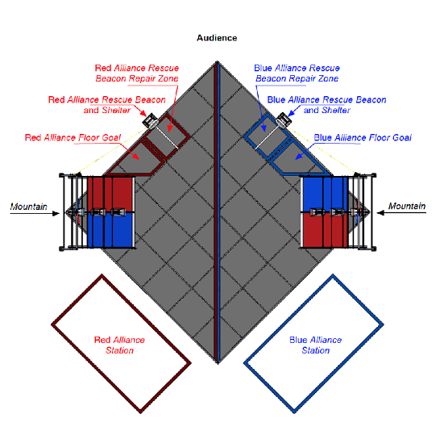

Today we continued working on the code involved for the first ten seconds of motion in the tournament known as autonomous. In this period we hope to reach the other side of the field towards the Res-Q beacon to dump our figures from the beginning and then trying to go as high as we can up the mountain. We coded this using our IronDem and the Pose classes to calculate the range and angle of our current location. We are using switch statements to accomplish this and have coded for much of the autonomous period now.
The main problem we have run into in our coding is readability and understanding the code thoroughly when we write it. Making simple careless errors must be found easily in this code like semicolons and mispelled variables. Otherwise, we still need to test the autonomous code and make sure that it works correctly. Next week, we plan to finish autonomous and test it completely. After autonomous we plan to start reviewing and coding navigation and the non autonomous code.